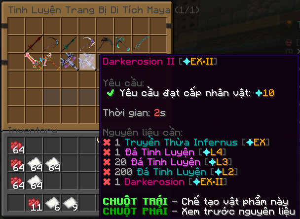

Người chơi thân mến, Revelation Skyblock phiên bản 4.0 - Kiếm Lạc Thương Khung, Mệnh Định Thiên Tuyệt sẽ ra mắt vào ngày 20.07.2025 sắp tới. Hãy cùng đón chờ những nội dung mới sắp diễn ra nhé!!!
MỤC LỤC
1. Chi tiết bảo trì
2. Nội dung cập nhật mới
CHI TIẾT BẢO TRÌ
Thời gian bảo trì:
Bảo trì cập nhật dữ liệu mới sẽ bắt đầu vào ngày 11.06.2025 lúc 07:00 (GMT+7), dự kiến hoàn thành trong 3 giờ.
Bảo trì kết thúc season III và toàn bộ sự kiện nằm trong mục lục 2 sẽ bắt đầu vào ngày 20.07.2025 lúc 10:00 (GMT+7), dự kiến hoàn thành trong 3 giờ.
*Hết sức lưu ý: Người chơi vui lòng không tham gia các hoạt động hàng ngày (Phó Bản, Thương Hội,...) trước thời gian bảo trì để tránh xảy ra các sự cố không mong muốn.
NỘI DUNG CẬP NHẬT MỚI
I. Ra mắt bản đồ mới DI TÍCH MAYA dành cho người chơi từ cấp [✦260] đến [✦350]
- Tại đây bạn sẽ gặp thêm 4 loại BOSS cường địch mới rất nhiều HP và mạnh, đồng thời thưởng tiêu diệt BOSS sẽ rất là hậu hĩnh
II. Ra mắt khu vực farm khoáng sản mới tại bản đồ DI TÍCH MAYA
- Khu vực farm Khoáng Sản - Quặng Linh Hồn /warp mineqlh
- Khu vực farm Khoáng Sản - Quặng Huyết /warp mineqh
III. Ra mắt cơ chế gây sát thương mới lên boss tại bản đồ DI TÍCH MAYA
- Có thể xem cơ chế hiệu ứng BOSS bằng lệnh /checkboss và di chuột vào BOSS bạn muốn xem
IV. Ra mắt tính năng cường hóa vũ khí mới, chỉ áp dụng cho vũ khí tinh luyện, vũ khí mới tại bản đồ DI TÍCH MAYA
- Đi đến NPC Cường Hóa tại bản đồ Di Tích Maya để mở giao diện
- Vật phẩm cường hóa có thể nhận được thông qua code tuần, sự kiện từ Admin,... sẽ cập nhật thêm cách nhận trong tương lai

- Cơ chế cường hóa:
+ Số lượng đá cường hóa cần để cường hóa cho mỗi cấp vũ khí sẽ tăng theo cấp hiện tại của vũ khí mà bạn muốn cường hóa đồng thời cũng tiêu hao thêm tiền [Moni trong máy chủ] để cường hóa
+ Cường hóa thất bại khi không có bùa bảo vệ sẽ làm cho vũ khí bị trừ đi 1 cấp và giảm chỉ số về cấp trước (Ví dụ ở +15 là tăng 50 sát thương thì khi về +14 sẽ còn 40 sát thương)
V. Cập nhật tăng cấp trang sức thần binh mới tại bản đồ DI TÍCH MAYA
- Tăng tối đa đến cấp 15
VI. Cập nhật vũ khí chính, vũ khí offhand cày mới tại bản đồ DI TÍCH MAYA
- Vũ khí tăng tối đa 3 bậc và có thể cường hóa thông qua giao diện cường hóa
VII. Mở khóa Overload trang sức vòng tay mới tại bản đồ DI TÍCH MAYA
- Trang sức vòng tay được Overload tối đa lên cấp 30
VIII. Mở khóa tinh luyện vũ khí mới tại bản đồ DI TÍCH MAYA
- Danh sách vũ khí được mở tinh luyện:
- Darkerosion EX I, EX II
- Springshine Melody/Occultist EX II
- Lam Ảnh Kế Thừa I
- Chiến Thần Sinh Đôi Khởi Nguyên
- Chiến Diệu Song Sinh Khởi Nguyên
- Chiến Thần Sinh Đôi Kế Thừa - I
- Chiến Diệu Song Sinh Kế Thừa - I

IX. Mở tăng cấp đá phòng thủ, sát thương mới tại bản đồ DI TÍCH MAYA
- Mở giới hạn tăng cấp đá phòng thủ và sát thương từ L26 lên L35
X. Ra mắt chế độ thống lĩnh mới tại bản đồ DI TÍCH MAYA
- Chi tiết hãy đến vị trí NPC trên bản đồ Di Tích Maya để xem
XI. Ra mắt nội dung cày cuốc liên quan đến nội dung Farming mới THU HOẠCH NÔNG SẢN
- Chi tiết hãy đến vị trí NPC bằng lệnh /warp nongsan
- Sự kiện lúc bắt đầu
- Nhớ bật TAB lên chú ý xem mình đang top mấy nhé
XII. Ra mắt trang sức liên quan đến nội dung Farming mới HUY CHƯƠNG NÔNG SẢN
- Cố gắng tham gia sự kiện Thu Hoạch Nông Sản thật nhiều để tích lũy nguyên liệu và đổi huy chương nông sản để tăng chỉ số cho nhân vật của bạn
- Huy chương nông sản ở phiên bản mới sẽ có cấp tối đa là 40 và sẽ được cập nhật thêm trong tương lai
Bonus. Giftcode Update [50 Lượt Nhập]
- Anh bạn thật sự đã xem hết chi tiết bản cập nhật này? Vậy thì đây là thưởng của bạn!
- Đăng nhập vào Revelation Skyblock và nhập /code RVLUPDATE40. Yêu cầu có thời gian chơi trên 25 giờ tại máy chủ mới nhập được nhé!